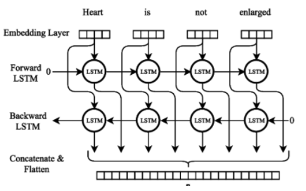
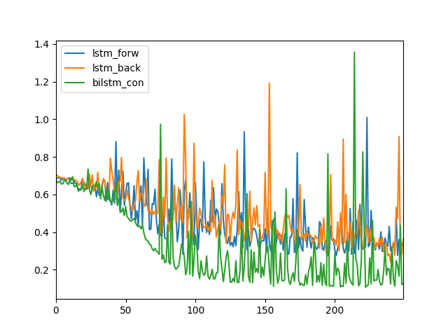
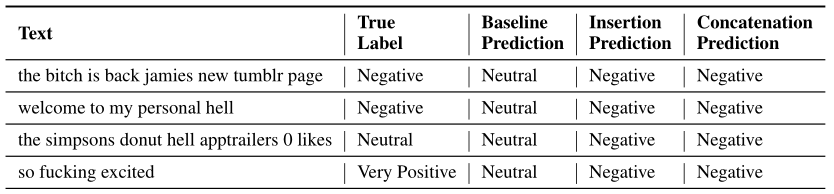
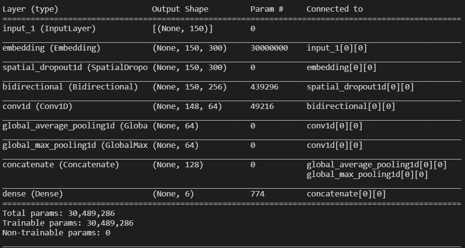

“NLP is an area of machine learning which deals with natural – human – languages. This is a broad field, dealing with problems ranging from speech recognition and transcription to text, to translation between different languages, to extracting entities such as people and locations from text, to providing natural language answers to natural language questions. In short, NLP gives machines the ability to read and understand human language – not to the extent humans can, but well enough to enable machines to perform simple tasks.
Long Short-Term Memory (LSTM) networks are a type of recurrent neural network capable of learning order dependence in sequence prediction problems. This is a behavior required in complex problem domains like machine translation, speech recognition, and more. LSTMs are a complex area of deep learning.
A Bidirectional LSTM, or biLSTM, is a sequence processing model that consists of two LSTMs: one taking the input in a forward direction, and the other in a backwards direction. BiLSTMs effectively increase the amount of information available to the network, improving the context available to the algorithm (e.g. knowing what words immediately follow and precede a word in a sentence).
Here is a comparison of the different losses achieved by three models:
We developed two models to analyze the tweet data. Both were trained on the same tweet data that was found on Kaggle. The first model looked to identify if a tweet was positive or negative based on the words it observed in the text. Once trained, it outputs a probability score between 0 and 1 (0 being negative and 1 being positive). Below is an example of how the different types of models label tweets:
As you can see the different levels of model complexity achieve different levels of success, but they all fail with complex language as seen in the last tweet.
Our second model looked to identify vulgarity in tweets and label them as toxic, severe toxic, obscene, a threat, an insult, or hate speech. This was achieved with a similar method as the first model but with different identifying labels. Afterwards it also provided a probability of each tweet being labeled as the above six categories. Below is a summary of this actual model:
After training both our models achieved accuracy levels above 90%.